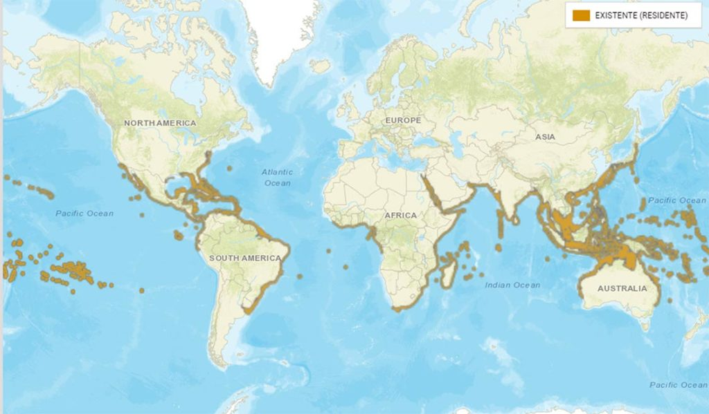
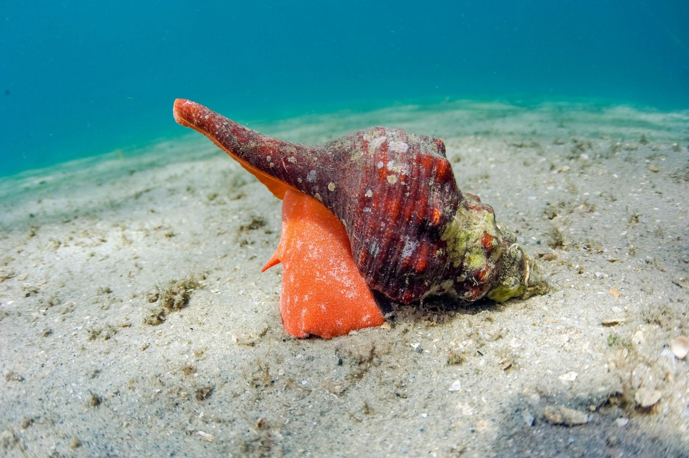
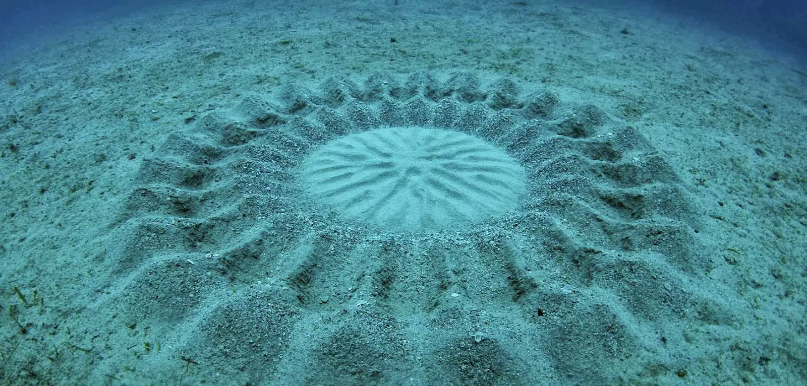

Hábitat y Ubicación Geográfica
El pez globo habita principalmente en aguas cálidas de zonas tropicales y subtropicales. Se encuentra en arrecifes de coral, manglares y estuarios. Algunas especies también viven en agua dulce o salobre.
Hábitos Alimenticios
El pez globo se alimenta principalmente de moluscos, crustáceos y erizos de mar. Sus dientes son muy fuertes y crecen de manera continua, por lo que necesita masticar cosas duras, como las conchas, para desgastarlos. Esta dieta le ayuda no solo a mantenerse nutrido, sino también a mantener sus dientes en buen estado, lo cual es esencial para su supervivencia. Sin este tipo de alimentación, sus dientes crecerían demasiado y no podría seguir comiendo correctamente. Los peces globo son muy buenos encontrando su comida en el fondo marino. Usan su sentido del olfato para detectar presas escondidas en la arena o entre las rocas, comiendo cosas que otros peces no pueden alcanzar. Esto les ayuda a mantenerse saludables y adaptarse bien a su entorno. Como sus dientes siguen creciendo, necesitan comer conchas, crustáceos y moluscos para desgastarlos. Así evitan que sus dientes se alarguen demasiado y puedan seguir comiendo sin problemas.
Reproducción
Durante la época de reproducción, los machos de los peces globo realizan danzas de cortejo para atraer a las hembras. Estos movimientos son parte de un ritual donde los machos demuestran su energia, mostrando su salud y vitalidad, lo que es crucial para que las hembras elijan al compañero más apto. Una vez que la hembra se siente atraída, deposita sus huevos en el fondo marino, y el macho los fertiliza en ese mismo momento. En algunas especies, el macho va más allá y cuida los huevos fertilizados, protegiéndolos de depredadores hasta que nacen. Las marcas en la arena no son solo decorativas, sino parte del cortejo. Los machos crean patrones complejos mientras realizan sus danzas, limpiando el área donde la hembra depositará los huevos. Además, estas marcas muestran la habilidad del macho para modificar su entorno y garantizar un espacio seguro para la descendencia.
